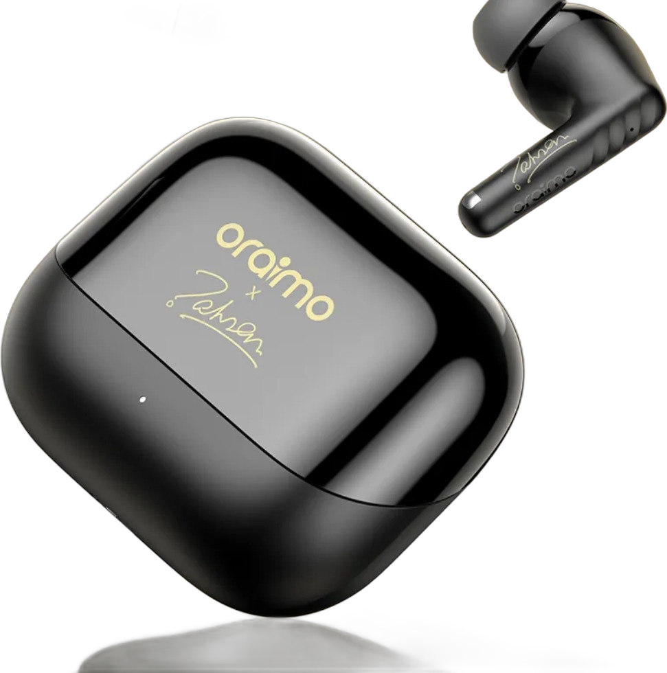
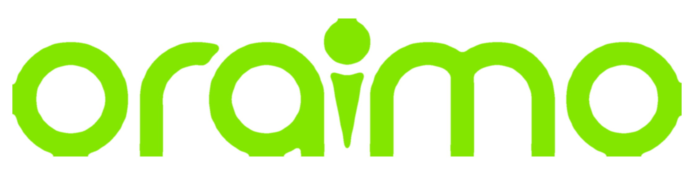
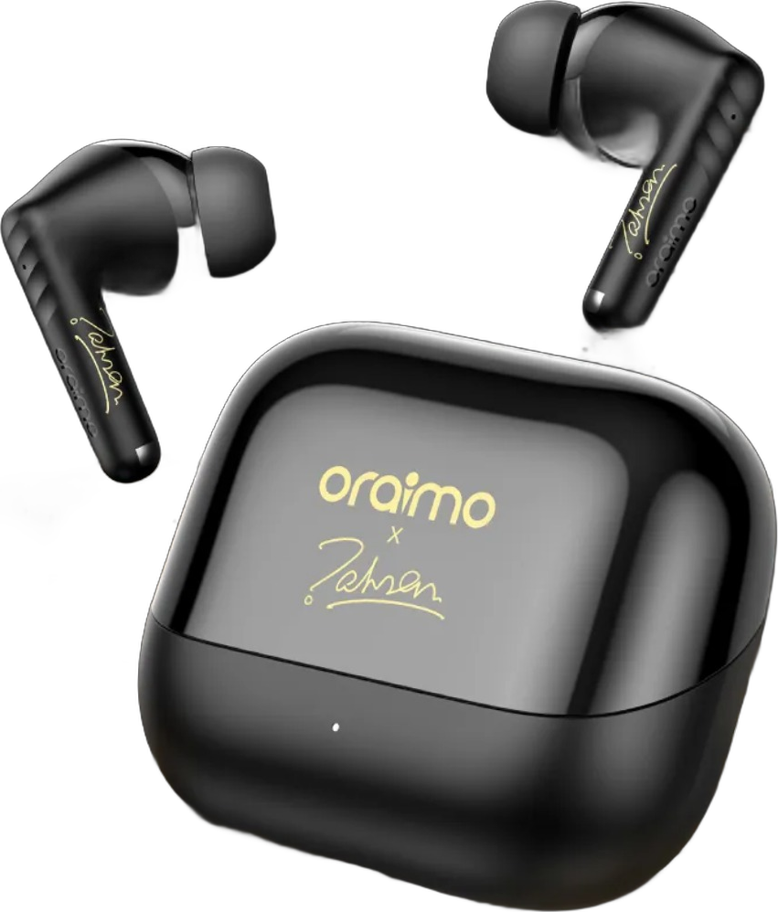
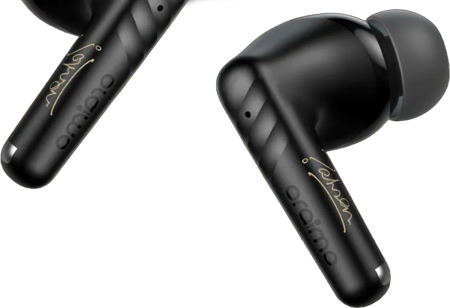
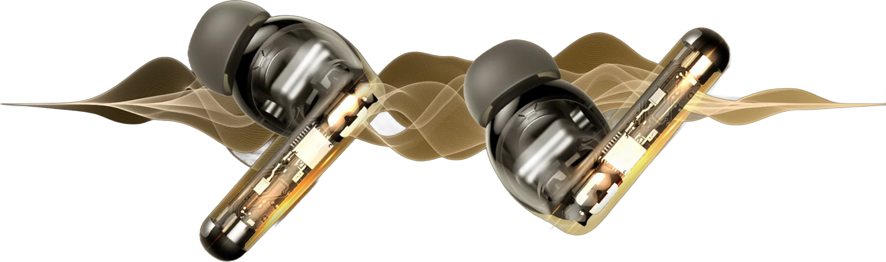

The world is
loud.
Your space

doesn't have to be.


SpaceBuds Neo+

ANC
●
Active Noise Cancellation
Less noise.
More you.

SOUND360
SPATIAL AUDIO
Sound that surrounds you.
Up to
30
hours of play.
5 h in the buds, 25 h more from the case (ANC off).
●
Mic 1
●
Mic 2
Clear calls.
Every time.
●
LOW-LATENCY GAME MODE
Sound in perfect sync.
●
Bluetooth 5.4
Open the case.
Connected.
Built-in hall sensor: it connects the moment the lid opens.
IPX4
·
METALLIC FINISH
·
TOUCH CONTROL
SPACEBUDS NEO+
BEYOND THE NOISE.